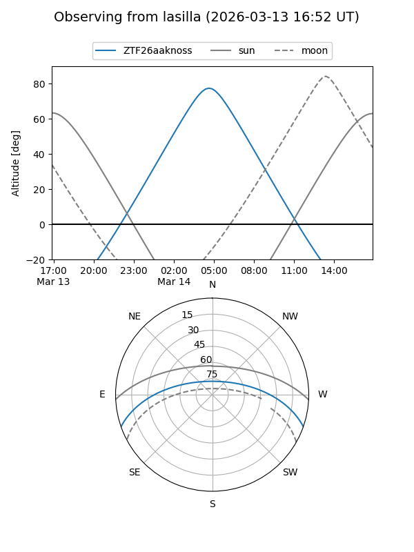
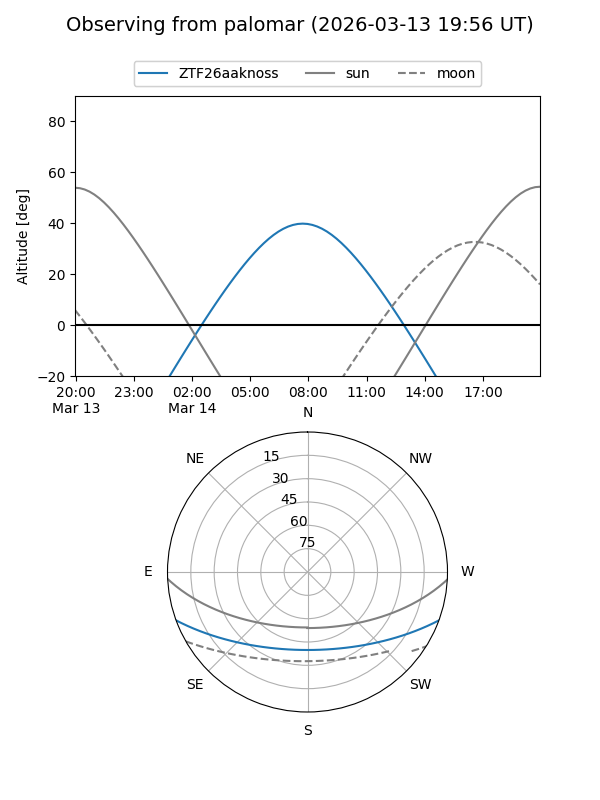

ZTF26aaknoss
Target ZTF26aaknoss at 2026-03-14 08:14
Aliases and brokers:
FINK: link
Lasair: link
ALeRCE: link
alt names
ZTF26aaknoss (ztf,fink_ztf)
Coordinates:
equatorial (ra, dec) = 170.2885,-16.63543
equatorial (HMS+DMS) = 11:21:09.24,-16:38:07.55
galactic (l, b) = (273.7388,+41.06259)
Flags:
Photometry:
last ztfg=19.80
1 ztfg detections
Lightcurve
Visibility


Additional plots